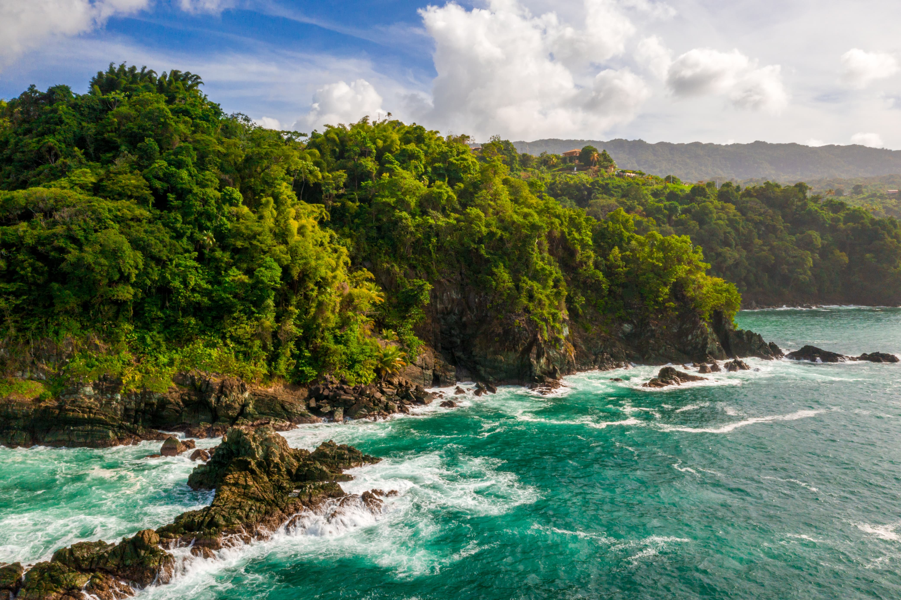
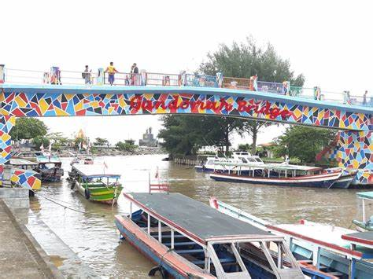
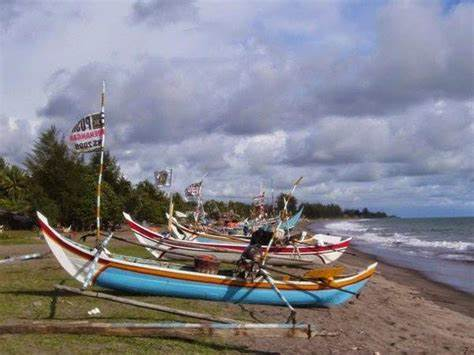
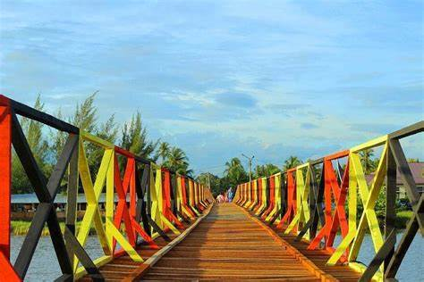
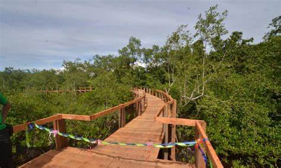
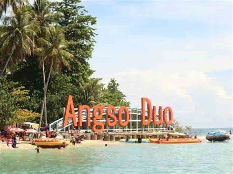
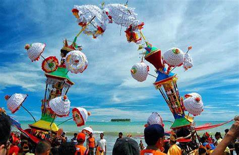
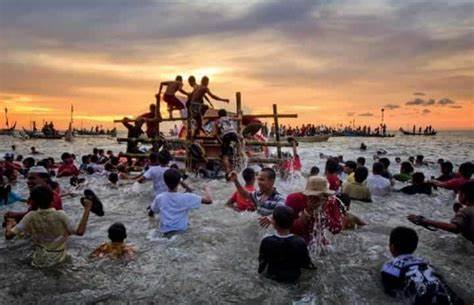

PANTAI PARIAMAN
PANTAI PARIAMAN



Fasiltas Yang Terdapat di Wisata Pantai Pariaman
Fasiltas Yang Terdapat di Wisata Pantai Pariaman

Di sekitar Pantai Kata ini, lo juga akan menemukan berbagai bentuk kapal nelayan
milik warga setempat yang digunakan untuk mencari ikan.
Nah, cukup beruntung jika lo melihat ada nelayan yang baru saja selesai mencari
ikan di laut lepas Pantai Kata.
Hal tersebut bisa lo
manfaatkan dengan membeli hasil tangkapan nelayan tersebut dengan harga yang
jelas lebih murah disbanding yang ada di pasar ikan di sana. Wah, seafood atau
makanan laut Pantai Kata memang konon katanya terkenal enak.

Taman Hutan Mangrove Pariaman adalah contoh dari sekian banyak wisata pesisir di
Pariaman.
Berlokasi di Kecamatan Pariaman Utara, Taman Hutan Mangrove Pariaman memiliki
luas area sekitar 8 hektar.
Objek wisata ini sangat cocok dijadikan wisata edukasi, karena Moms dan Dads
dapat mempelajari tentang tumbuhan mangrove.
Di sini juga terdapat jembatan dengan panjang 60 meter, yang menjadi spot foto
instagramable.
Tiket masuk tempat wisata dibanderol seharga Rp 8.000.
Taman Hutan Mangrove terletak di Apar, Kecamatan Pariaman Utara, Pariaman,
Sumatera Barat.
Taman Wisata Alam Mangrove
Pariaman (Facebook #hutanmagrovePariaman)
Selain mengedukasi mengenai manfaat Hutan Bakau terhadap lingkungan, destinasi
ini juga memanjakan pengunjung denhan berbagai keindahan alam dan pantai.
Selain spot Track jalur Hutan Mangrove yang menawan, disekitar kawasan hutan
juga banyak spot-spot menarik seperti rumah segitiga, tempat-tempat istirahat.
Tak hanya itu, Pariaman yang terkenal dengan kuliner lautnya juga akan
memanjakan lidah pengunjung yang bisa ditemukan di sepanjang jalan menuju Taman
Wisata Hutan Mangrove Pariaman.

Pulau Angso Duo, menjadi pulau yang sangat populer, terkenal dengan
keindahannya, sekaligus menjadi puncak wisata bagi mereka yang berkunjung ke
Pantai Gandoriah.
Layaknya sekali mendayung, dua pulau terlampaui. Hal tersebut dikarenakan jalan
menuju Pulau Angso Duo salah-satunya harus melewati Pantai Gandoriah.
Jika cuaca cerah, mayoritas pengunjung yang datang ke pantai tersebut,
dipastikan akan berkunjung juga ke Pulau Angso Duo.
Cuaca cerah menjadi syarat
wajib kunjungan ke Pulau Angso Duo. Karena beberapa waktu yang lalu, pernah
terjadi peristiwa pengunjung yang terjebak di Pulau Angso Duo karena badai.
Pulau Angso Duo menjadi primadona wisata Pariaman, bahkan sudah terkenal sampai
mancanegara. Tidak jarang, banyak turis asing yang berkunjung ke sana.

Upacara Budaya Tabuik menarik ribuan wisatawan sehingga ditetapkan juga sebagai
destinasi wisata budaya ke Pariaman.
Festival ini diresmikan sebagai bagian dari pariwisata Indonesia oleh pemerintah
dan pemerintah setempat. Dengan demikian, tujuan dari festival Budaya tidak
hanya untuk merangkul upacara adat menjadi lebih kukuh sebagai bagian dari
kekayaan budaya Indonesia, melainkan juga untuk merangkul wisatawan domestik dan
internasional.
Tujuan lebih luasnya, untuk membuat semua orang dapat mempelajari dan menggali
budaya Pariaman itu sendiri.
Sejak dipromosikan sebagai
bagian wisata budaya dari Pariaman, kunjungan wisatawan ke daerah tersebut
meningkat.
Melihat kesempatan yang baik, maka pemerintah daerah bekerjasama dengan
pemerintah pusat melakukan pengembangan dan penambahan fasilitas di sejumlah
objek wisata untuk meningkatkan kenyamanan dan keamanan di daerah sekitarnya.
Ketika festival budaya Tabuik menjadi salah satu daya tarik, maka tidak menutup
kemungkinan bahwa arus turis luar negeri ke daerah ini akan semakin tinggi
karena pesta budaya ini semakin populer.
Bahkan Festival Budaya Tabuik sudah ikut dipamerkan di Kota Hamburg Jerman 2016
lalu oleh Lembaga Kantor Berita Nasional (LKBN) Antara. Pameran itu
diselenggarakan sebagai ajang promosi tempat wisata internasional.